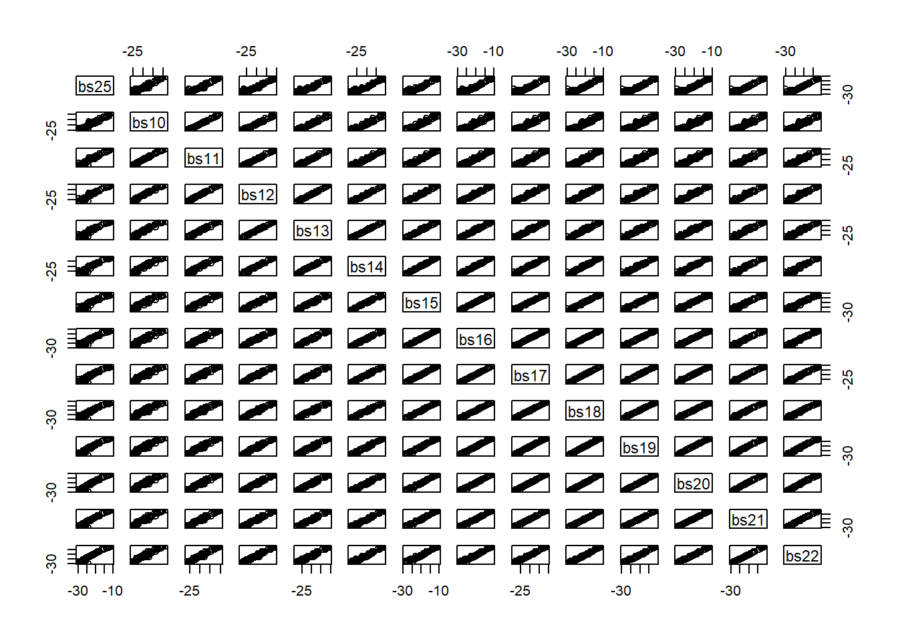
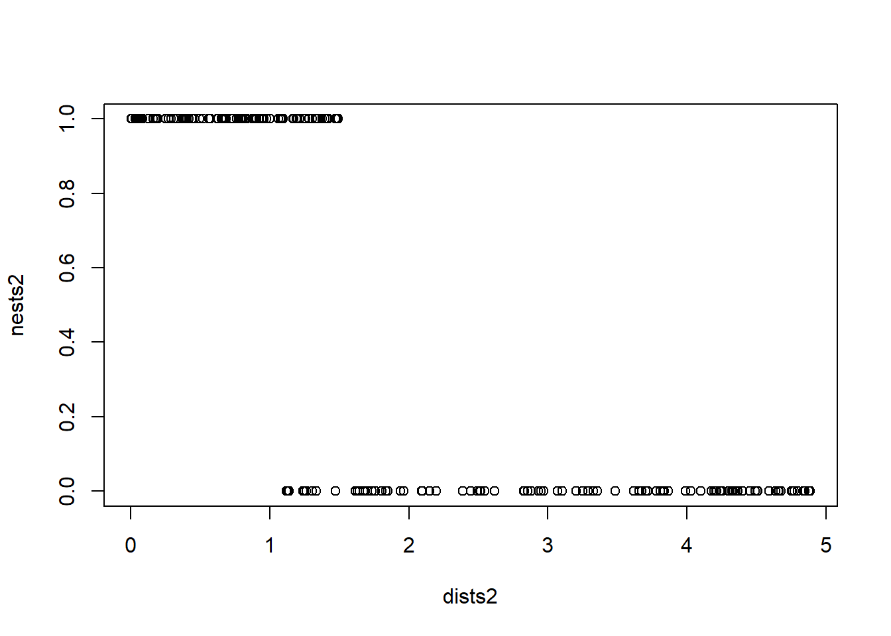

Chapter 12 Class 12: 04 11 2020 Maximum likelihood and all that
We have been fitting regression models, using say function lm. While this might seem rather ordinary and uninteresting to a seasoned statistician, it is quite remarkable for the everage person. So remarkable that I would suggest the analogy of a cell phone to most of us. We do not really think about it, since we do it all the time, but wait a second: can you imagine all the things that must happen inside that little device so that your cousin Maria João having her honey moon in Hawaii can share with you a 2-second delay live of the fantastic romantic dinner she is having, while you are actually 10000 meters above ground on a plane preparing to land in Siberia? For about 99.9 % of you, you do not! And I do not plan on telling you here - I hope by now you have realized that is beyond the purpose of this book. On the contrary, telling you exactly what happens behind the scenes when a function like lm reports some maximum likelihood estimates of a given model parameters is the task that lays ahead. “Brace brace!”, as they might say when facing strong turbulence on your plane that currently is landing in Siberia.
What lm does under the hood is, based on a model, estimate the best value of the parameters, given the data. We illustrate it using the standard linear model, with a single covariate \(x\) to explain the response \(y\)
\[y=\alpha+\beta x+e_i\]
where \(e_i~Gau(0,\sigma^2)\). The lm function finds the best values of \(\alpha\), \(\beta\) and \(\sigma\), given the data. Those we call estimators, and denote them by \(\hat \alpha\), \(\hat \beta\) and \(\hat \sigma\). After collecting a sample, we fit the model and we get the estimates. Remember estimates are observed values, or realizations based on the sample, of estimators.
The way lm finds the estimates is via maximum likelihood. Actually, this happens despite the fact that the line is widely know as the minimum squares line. Why is that? Because as we saw in chapter ?, that line is the line that minimizes the sum of the squares of the deviations between the observations and the predictions conditional on the best line. Formally, that is the line that minimizes the following quantity
\[\sum_{i=1}^n (y_i-\hat y_i)^2=\sum_{i=1}^n (y_i-(\hat \alpha+ \hat \beta x_i))^2.\]
But what is the likelihood and does it work? We will introduce the concept using an example. Imagine a biologist, lets call her Andreia. Andreia is interested in estimating the probability that a pair of jays will produce eggs before the first of june.
She sets out to find a random sample of blue jay nests, and defines a random variable \(X\) representing the egg status of a nest on the 1\(^{st}\) of june. We assume that all eggs layed before 1 June will not have fledged yet). Andreia decides that \(X\) will take:
- the value 1 if eggs are present, which she will call a success, and she assumes that happens with probability \(\theta\),
- the value 0, which she calls a failure, representing no eggs present, with probability 1-\(\theta\).
Assuming that the probability of different nests having eggs is independent, each of these is a Bernoulli trial, and there are \(N\) trials, of which we could say \(n\) will be sucesses, and \(n-n\) will be failures. The Bernoulli distribution is a special case of a Binomial random variable, with a single trial and probability of success \(\theta\). In fact, you you consider all the nests together that is indeed a Binomial with parameters \(N\) and \(p\). A small detour to justify this statement: there is a theorethical result that demonstrates that the sum of \(K\) independent Binomials \(X_k\), each with \(N_k\) trials, with constant probability of success \(p\), is a Binomial(\(N,p\)), where \(N=\sum_{k=1}^K N_k\). Therefore, the sum of \(k\) Bernoulli trials, i.e. \(k\) Binomial(1,p) independent random variables, is a Binomial(\(K,p\)).
So this is a model with a single parameter, \(\theta\). (since we know \(N\), the number of trials!)
Andreia goes out and about in the field and finds 5 nests. The first has eggs, the second and third do not, the forth does, and the fifth does not. By this time Andreia is tired and decides to call it a day, with her sample \(\tilde \x\) collected: \(\tilde \x=c(1,0,0,1,0)\).
Note that in this case the number of successes n is 2 and the number of failures N-n is 3.
Then she asks a friend doing an MSc in biostatistics how she can estimate the value of \(\theta\). Unfortunately, her friend has just started her classes, and she too is a bit unsure about what to do too. But she does know how to calculate the probability of the observed sample.
\[P(x|\theta)=\theta (1-\theta) (1-\theta) \theta (1-\theta)=\theta^2 (1-\theta)^3\]
If only we knew what the value of was we could evaluate this probability. Imagine that it was 0.2, then the probability of the sample would be \(0.2^2 0.8^3\)=0.02048. What if it was 0.8, then the probability of the data would be \(0.8^2 0.2^3\)=0.00512. This is a considerably lower probability.
And here’s when Andreia’s friend has a great idea. What if we turn it around and look at this as a function of theta, conditional on the data
\[P(\theta|x)=\theta (1-\theta) (1-\theta) \theta (1-\theta)=\theta^2 (1-\theta)^3\]
Then we could evaluate the expression for a set of possible values for \(\theta\), and the largest probability will intuitively correspond to the most likely value of \(\theta\).
library(knitr)
thetas<-seq(0.05,0.95,by=0.1)
pthetas<-thetas^2*(1-thetas)^3
kable(cbind(thetas,pthetas),col.names = c("theta","P(theta)"))| theta | P(theta) |
|---|---|
| 0.05 | 0.0021434 |
| 0.15 | 0.0138178 |
| 0.25 | 0.0263672 |
| 0.35 | 0.0336416 |
| 0.45 | 0.0336909 |
| 0.55 | 0.0275653 |
| 0.65 | 0.0181147 |
| 0.75 | 0.0087891 |
| 0.85 | 0.0024384 |
| 0.95 | 0.0001128 |
The largest values are observed for the trial values of \(\theta\) of 0.35 and 0.45. What if we calculate that probability for a fine grid of values possible for \(\theta\) and represent it in a plot. This is what follows, and we add to the plot a dashed vertival line representing the value of \(\theta\) for which that function is maximized.
thetas <- seq(0.01,0.99,by=0.01)
pthetas<-thetas^2*(1-thetas)^3
plot(thetas,pthetas,ylab="P(\theta|x)",xlab="theta")
abline(v=thetas[pthetas==max(pthetas)],lty=2)
You will probably not be too surprised to find out that \(\hat \theta\)=0.4 is indeed the maximum likelihood estimate (MLEe), and that for a proportion \(\hat \theta\)=successes/trials is the maximum likelihood estimate (MLE). Therefore, note that it will only be from the context that one can say if MLE stands for an estimate, which corresponds to a random realization of the estimator, or for the estimator itself. This should not have come as a surprise. Remember we had 2 successes in 5 trials, and that corresponds to 0.4.
Andreia asks her friend what was the point. If the MLE was just the empirical proportion, 2/5=0.4, why going through all this trouble? There’s at least 3 good reasons for that:
- This way we understand why an MLE is
- If you look at the figure above, we not only have an estimate of the parameter \(\theta\), but we also have an idea about the precision around that estimate. That comes from the shape of the likelihood profile. We get back to this below.
- by embedding it in the concept of a likelihood, we open the door to generalize this procedure to any other far more complicated situation for which closed form analytical estimatrs do not exist. As examples of additional sophistication, we could easily:
- consider several parameters at once; as an example, we could be considering instead of a Bernoulli a complex model that describes how a whale dives, with 17 parameters that we want to maximize at once. Rarely closed form estimators will be available then;
- make the parameters a function of observed covariates. In the case of our nests, the height of the nest could be a relavant covariate to model the probability of success of a nest, say. In such a case, we could have an estimate for \(\theta\) that would be dependent of the height
h, e.g by defining that \(\theta_h=f(h)\). Naturally we would choose the link function f such that theta would be constrained to be between 0 and 1, the possible values for a probability. The logit link function comes to mind here. But that will be a story for another day.
To ilustrate the point above regarding being able to estimate the precision around the parameter estimate from the likelihood function, lets consider that we had not 5 samples, but man more. In the figure below we contrast the small sample size to a set of increasing sample sizes: 50, 100 or 200.
par(mfrow=c(4,1),mar=c(4,4,0.5,0.5))
thetas <- seq(0.01,0.99,by=0.01)
pthetas<-thetas^2*(1-thetas)^3
plot(thetas,pthetas,ylab="P(\theta|x)",xlab="theta (n=5)")
abline(v=thetas[pthetas==max(pthetas)],lty=2)
thetas <- seq(0.01,0.99,by=0.01)
pthetas<-thetas^20*(1-thetas)^30
plot(thetas,pthetas,ylab="P(\theta|x)",xlab="theta (n=50)")
abline(v=thetas[pthetas==max(pthetas)],lty=2)
thetas <- seq(0.01,0.99,by=0.01)
pthetas<-thetas^40*(1-thetas)^60
plot(thetas,pthetas,ylab="P(\theta|x)",xlab="theta (n=100)")
abline(v=thetas[pthetas==max(pthetas)],lty=2)
thetas <- seq(0.01,0.99,by=0.01)
pthetas<-thetas^80*(1-thetas)^120
plot(thetas,pthetas,ylab="P(\theta|x)",xlab="theta (n=200)")
abline(v=thetas[pthetas==max(pthetas)],lty=2)
As we increase the sample size, and hence we increase the amount of information available to estimate \(\theta\), the likelihood profile becomes more spiky. It can be demonstrated that the curvature of the likelihood profile allows us to quantify the precision on our estimate of the parameter. Naturally, the stteper the curve, the better, in the sence that the more certain we are. On the other hand, when the likelihood surface is very flat, we might hit problems in terms of the numerical maximization of the likelihood.
12.1 Maximizing a likelihood algebreacally
While above we were able to maximize the likelihood function via a “grid” search. We divided the possible range of values that the parameter could take, also know as the parameter space, into a large number of candidate values. Then we evaluated the likelihood at each one of these, and picked the value of the parameter for which the function was mamimum: the maximum likelihood estimate.
Grid search can become very inefficient very fast, and hence there are other ways to maximize a likelihood. One is to analytically find what is the maximum of that function. How can we do that. Straighfowardly for our example. You differentiate the function, find the point at which the first derivative is 0, and by definition that point is a maximum or a minimum. If you are unsure the second derivative would tell you which. Considering the above
\[\frac{d(f(\theta))}{d \theta}=\frac{d(\theta^n (1-\theta)^{N-n})}{d \theta}\]
Then by solving
\[\frac{d(f(\theta))}{d \theta}=0\]
we get that \(\hat \theta = n/N\), which is just the empirical proportion (i.e. the observed proportion of successes in the sample).
(note to self: add detail to these derivations above)
However, like the grid serach, this is not a problem free procedure. The above expression was simple enough that derivation was trivial. That might not be the rule, butr the exception, so we need an alternative apporach for when models are more complex than our Bernoulli example. That will be the norm in real ecological models.
12.2 Numerically Maximizing a likelihood
Here we look at using a numerical maximization procedure, which means that we will derive a procedure, and algorithm, that will find the maximum of a function computationally. The analogy with the real world is simple. Imagine that you were somewhere in the most boring country in the world, Boredomnesia. It happens to be a square with a single mountain at the center, as depicted in the image below, and you wanted to start walking and reaching the highest point in the country. Boredomnesia happens to also be the foggiest country in the world, so you manage to see about 3 meters around you, at most!
# need mvtnorm package
library("mvtnorm")
range = seq(-5,5,0.1)
mean = c(0,0)
Sigma = matrix(c(1, .5, .5, 1), 2)
out = matrix (rep(0,101*101),101)
for (i in 1:length(range)){
for (j in 1:length(range)){
out[i,j] = dmvnorm(c(range[i],range[j]),mean=mean,sigma=Sigma)
}
}
persp(out,theta = 30,phi = 20,col="lightblue",xlab = "Latitude",ylab="Longitude",zlab="Elevation")
Figure 12.1: Ilustrating a likelihood. This would be Boredomnesia, the most boring country in the world. You want to to find a way to reach its highest point amidst the dense fog that characterizes it. How can you do it? Just keep moving up!
But you actually have no idea about the orography of the country, and you can only see so much as the country is always a bit foggy. To make sure you manage, you could set up a set of rules for yourself:
- starting where you are (this seems like a lame first step, but you will see surprisingly that is actually one of the hardest for a computer!). Then, until you can’t find a highr point, repeat the following steps:
- evaluate the height where you are currently
- evaluate the height at 8 directions around you (like North, South, East, West and the 4 intermediate directions, say)
- move toward the steepest highest of those directions
- if the diference in elevation (i.e. the mountain slope) is
- high: move 3 meters
- low: move 1 meter
If you do these steps above, when you stop you are at most 1 meter from the top. Well done, you are the king of the world.
Naturally, this assumes the terrain of the country you are in is relatively simple. More precisely, that there is only one montain in the country, and there are no valeys (or in a likelihood world, no local maxima). Basically, you would not like to be Dane, or Dutch, as there are no mountains there to begin with, and definitely you would not want to be near the Grand Canyion (Figure X) or in Scotland (Figure X), where the Munro’s would certainly defeat you. As we will see below, this has very important implications in the likelihood world!
The nightmare place for our example task of finding the highest place using the move-towards-higher-ground algorithm, given all the plateaus
The nightmare place for our example task of finding the highest place using the move-towards-higher-ground algorithm, given all the local maxima
Now… what happens inside a computer? The above example makes more sense if we are maximizing a likelihood with respect to two parameters, so that the likelihood surface is a bi-dimensional surface. Imagine a Gaussian, for which we want to estimate the mean \(\mu\) and the standard deviation \(\sigma\). In the real world the analogy is latitude is equivalent to \(\mu\), longitude is equivalent to \(\sigma\), and the altitude is the likelihood. So now we look at how a computer does it!
There are many algorithms one could use, and here we will use some standard R functions to do the job for us. We will consider a couple, optimize, when we are only considering a single parameter, and optim, for when more than one parameter is at stake. An alternative to optim might be nlm (from package stats). There are many other options in and outside R!
The first thing we need to do is to write up the likelihood function. This will be often the hardest part. That would be like having a detailed map of the country. We know that takes a lot of work to do.
This must be a fuction which the first argument is the parameter(s), typically the second is the data. Then other additional parameters migh follow, or not.
Let us build, step by step, a likelihood for the example of the Bernoulli case for the nests we were looking at in the previous section.
Recall the probability of \(\theta\), given the data 1,0,1,0,0.
\[P(\theta|x)=\theta (1-\theta) (1-\theta) \theta (1-\theta)=\theta^2 (1-\theta)^3\]
We can write a bespoke function of theta to evaluate this probability
Now we use it, job done
## [1] 0.03364156just as in the table above, we are good. But this is not really what we want, because the data, our sample was hardwired, we need a function that could cope with any sample. We need to be able to compute the relevant statistics from the sample. Andreia realizes that she can do that easily by summing successes and failures in the table
## [1] 2## [1] 3and hence she suggests this new formulation
She tries it out
## [1] 0.03364156and she gets the same value as above. She’s happy, as she can now calculate the likelihod for (1) any parameter value and (2) any sample. Excited, she shows how this would be the case for 11 nests, with just 1 success.
## [1] 0.00471196Now, she’s really excited and she has a dream where she samples 1000 eggs, and 300 successes. She wakes up and wants to know the likelihood under that scenario
## [1] 1.818708e-268Ups, something went terribly wrong, the likelihood is now… 0. This is unhelpfuls, I can’t climb a mountain if there is no mountain! She scratches her head for a while and she realizes what is going on. She’s multiplying 5000 probabilities, even if those were high, the computer will round them to 0.
Andreia calls a friend, and he says that he will give her two clues that might help. And then says:
If you apply the log to a function, the loggedt function will have the same function as the untransformed function, and
log(a*b)=log(a+b)
Andreia hangs up the phone and takes a mental note: “I need to find bether, more useful friends”! But during the night she has an epifany. If she logs the funtion, a product of probabilities, she will get a sum of log probabilities. Log probabilities are smaller than probabilities, but there’s a small miracle in the process. The sum of small numbers does not tend (does not converge to 0!). And so she tries a new function, where she adds the log probabilities
logliktheta=function(theta,data){
loglik=sum(log(theta^sum(data==1))+sum(log((1-theta)^sum(data==0))))
return(loglik)
}She calculates the function that gave her grief above, and the egg dream meets the epifany
## [1] -616.4947Then, she just needs to call the optimize, where interval defines the plausible parameter space, and we make sure that maximum is TRUE because by default the function optimize minimizes (That is why we sometimes use a function that is -log(likelihood), that means the minimum is the point we want!) the function f with respect to its first parameter, given any other arguments provided to f. In this case those other paramters are just the data, the second argument for liktheta. Those you will recognize as our data.
## $maximum
## [1] 0.399996
##
## $objective
## [1] -3.365058Now we can actually calculate the MLE for \(\theta\) in the case of Andreia’s dream sample.
MLEthetadream<-optimize(f=logliktheta,interval=c(0.01,0.99),data=dreameggs,maximum=TRUE)
MLEthetadream## $maximum
## [1] 0.2999964
##
## $objective
## [1] -610.8643So the otput of optimize has two components, \(maximum\) and \(objective\). What are these?
The two components of this object are the MLE of the parameter, in this case 0.399996 and the value of the function at that point for \(\theta\), in this case -3.3650583. This will be the actual value of the likelihood at this point and might be useful later, but for now we ignore it. Note that 0.399996 is just a numeric approximation of the real value, that we know analytically to be 0.4. These are illustrated below:
#valores possiveis para thetas
thetas<-seq(0.01,0.99,by=0.01)
#object to hold the values of the likelihood
nthetas <- length(thetas)
loglikthetas<-numeric(nthetas)
#para cada theta
for(i in 1:nthetas){
loglikthetas[i] <- logliktheta(thetas[i],nests)
}
plot(x=thetas,y=loglikthetas,ylab="Log likelihood",xlab="theta")
abline(v=MLEtheta$maximum,h=MLEtheta$objective,col="green")
As a task, what would it require to change the above code to calculate the value of theta if we had 78 trials and 43 sucesses? You got it, just need to change the data
MLEtheta<-optimize(f=logliktheta,interval=c(0.01,0.99),data=c(rep(1,43),rep(0,78-43)),maximum=TRUE)
MLEtheta## $maximum
## [1] 0.5512824
##
## $objective
## [1] -53.6545So, now we know all about likelihoods, but Andreia wonders. Why all the trouble, if I could just have calculated the exact value of the MLE as the observed proportion? To that we need to continue with Andreia’s explorations.
12.3 The case of a Gaussian
Lets now look at situation where Andreia is interested in characterizing how far away from the neares river, in a straight line, are the nests from water. She assumes that these might be hypothetically descirbed by a Gaussian random variable. That will be the basis for constructing a likelihood. For her 5 nests, those distances in kilometers are
Then she thinks about what might the likelihood look like for a Gaussian. She knows R can calculate the density of a Gaussian via rnorm, and so she suggests the folowing minus log likelihood function:
minuslogliknorm=function(pars,data){
media=pars[1]
desvio=pars[2]
minusloglik=-sum(log(dnorm(data,mean=media,sd=desvio)))
return(minusloglik)
}She testes the function on simulated data, 10000 fake distances with mean 2 and standard deviation 2.7. Either a small miracle happened, or she got it right at first try:
#simulated sample size
n<-10000
# simulated mean
mG<-2
# simulated standard deviation
sdG<-0.7
# simulated sample
xs=rnorm(n,mean=mG,sd=sdG)
# MLE of the parameters
MLEGau<-optim(par=c(1,1),fn=minuslogliknorm,data=xs)
MLEGau## $par
## [1] 2.0014862 0.6910547
##
## $value
## [1] 10494.15
##
## $counts
## function gradient
## 63 NA
##
## $convergence
## [1] 0
##
## $message
## NULLNote she now has more than 1 parameter, so optimize was not an option, and had to use funtion optim. This requires strating values via argument par, but the rest is similar to optimize, the data and the function to maximize is fn. The output is a bit messier, and while the resulting object components are all relevant to know about, we ignore them for now for simplicity. If we evaluate this likelihood using a brute force grid apporach, this is what we get
Notice that this image reminds us of Boredomnesia! Now, we know how to do this for more than one paramter, but why would we. After all, if I wanted to estimate the MLE of a Gaussian, actually, the sample mean mean(xs)=2.0015415 and the sample standard deviation sd(xs)=0.691098 are what I want. So the above values obtained by optim for \(\mu\) and \(\sigma\), the MLEs, 2.0014862 and 2.0014862 respecytively, are really just numerical approximations of the real analyitically obtainable MLE’s 2.0015415 and 0.691098, respectively (note: need, strictly, to refer to minor detail regarding denominator of the standard deviation, considering n, the MLE, or n-1, not MLE but unbiased; ME students can ignore detail for now!). These are themselves, in this case where we know reality, estimates of the true simulated values generating our data, 2 and 0.7, respectively. So all quite reasonable and close, really, what is not surprising given a sample size of 10^{4}!
Now, what about based on the distances Andreia had for the 5 nests
## [1] 0.98 1.73 1.32 0.54 2.12And it is yet unclear why we should do it this way. We continue our story, and the plot thickens…
12.4 The case of a linear model
We started by talking about lm, so, what is happening behind lm.
Let’s us imagine that for each nest, Andreia also related the size of the nest with the distance to the water. The size of the nest, diameter, in cm, was as below, She is interested in describing, modeling, explaining how nest size changes as a function of distance to the water.
We can visualize the relationship between the distance to the water and the nest diameter

So now Andreia needs a likelihood. Since the above relation seems linear, she remebers that the linear model is given by
\[y_i=a+b x_i+e_i\]
where the \(e_i\) are a Gaussian with mean 0 and constant variance \(\sigma^2\). And then she has another epifany and realizes that she can construct data for which a likelihood can be derived. Because if she rearranges the above, you have
\[e_i=y_i-(a+b x_i)=y_i-\hat y_i\] where, remember, \(e_i\) are a Gaussian with mean 0 and constant variance \(\sigma^2\). And so we can build a likelihood that explits that Gaussian density for the observed errors, as
liklm=function(pars,data){
#data must be a data.frame with columns y and x
a=pars[1]
b=pars[2]
sigma=pars[3]
ps=dnorm(data$y-(a+b*data$x),mean=0,sd=sigma)
#minus loglik
loglik=-sum(log(ps))
return(loglik)
}and we use it over our sample
## Warning in dnorm(data$y - (a + b * data$x), mean = 0, sd = sigma): NaNs produced## $par
## [1] 10.299536 6.607296 1.524602
##
## $value
## [1] 9.204965
##
## $counts
## function gradient
## 198 NA
##
## $convergence
## [1] 0
##
## $message
## NULLand so we get as estimates of \(a\), \(b\) and \(\sigma\) of 10.2995358, 6.6072961 and 1.5246019, respectively. So finally, Andreia uses her estimated values for \(a\) and \(b\) and puts them over the above plot of the data
plot(dists,size,xlab="Distance (km)",ylab="Nest diameter, cm")
abline(lmMLE$par[1],lmMLE$par[2],lty=2,lwd=2,col="blue")
Now, we know that lm does this kind of stuff very efficiently, so how do these compare across? We can look at the outcome of the lm call
##
## Call:
## lm(formula = size ~ dists)
##
## Residuals:
## 1 2 3 4 5
## 0.2259 -2.4306 2.1790 -0.6663 0.6920
##
## Coefficients:
## Estimate Std. Error t value Pr(>|t|)
## (Intercept) 10.298 2.304 4.469 0.0209 *
## dists 6.609 1.591 4.152 0.0254 *
## ---
## Signif. codes: 0 '***' 0.001 '**' 0.01 '*' 0.05 '.' 0.1 ' ' 1
##
## Residual standard error: 1.969 on 3 degrees of freedom
## Multiple R-squared: 0.8518, Adjusted R-squared: 0.8024
## F-statistic: 17.24 on 1 and 3 DF, p-value: 0.02538and when we add these to the above plot, we see we were bang on: the two lines are indistinguishible by eye.
plot(dists,size,xlab="Distance (km)",ylab="Nest diameter, cm")
abline(lmMLE$par[1],lmMLE$par[2],lty=2,lwd=2,col="blue")
abline(lm0,lty=3,lwd=2,col="green")
So, but still, why would we do it this way, since lm does it with less hassle, faster, and probably better? For a number of reasons, including:
- because it allows us a framework that is generalizable to any model for which we can define the likelihood, so it works for more than standard regression models
- because it allows us to really understand what is happening in the background, as an example, we can relate the profile of the likelihood to the variance around the parameter estimates
So to complete this chapter, lets see an example for which a dedicated function like lm is not available off the shelf, and we would really need to write down our own likelihood to get meaningful ecological inferences.
12.5 The really interesting case
(Work in progress, a tale from Conceição, about relating the probability of success of an egg with the distance it is from the water)
12.6 Likelihood, above and beyhond
(Work in progress)